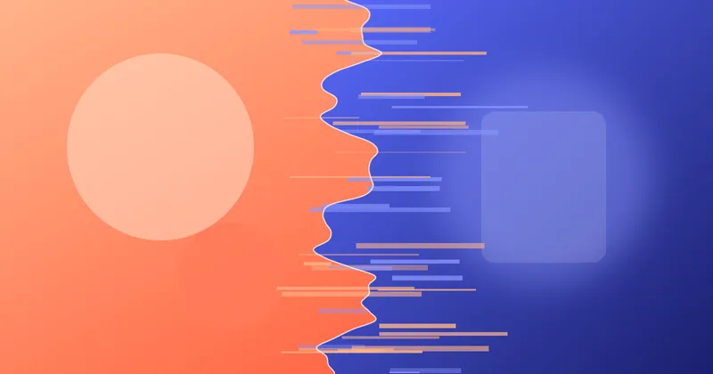

Building Buttery WebGL Page Transitions with Three.js
A step-by-step guide to shader-based image transitions in Three.js — texture loading, a displacement shader, GSAP timing and graceful fallbacks.
The blog
Practical, long-form articles about building fast, accessible and delightful interfaces — WebGL transitions, Core Web Vitals, motion systems and the rest of the creative frontend toolkit.
Write the article you needed six months ago.

A step-by-step guide to shader-based image transitions in Three.js — texture loading, a displacement shader, GSAP timing and graceful fallbacks.
How to keep LCP, INP and CLS green on sites full of WebGL, video and animation — with budgets, lazy loading and real-user measurements.
Tokens for duration and easing, choreography rules and reduced-motion fallbacks — how to turn one-off animations into a coherent motion system.
Why this portfolio uses Next.js for the interactive homepage and Astro for the blog — and a checklist for deciding on your own project.
Build a tiny lo-fi generator with oscillators, filters, a lookahead scheduler and a convolution reverb — the same engine behind this site's music player.
Copy-paste JSON-LD for Person, FAQ, Product, Review, Event and Breadcrumb markup — plus how to test it before search engines do.
Custom cursors and mouse trails can delight — or exclude. How to build them so they respect touch devices, reduced motion and assistive technology.